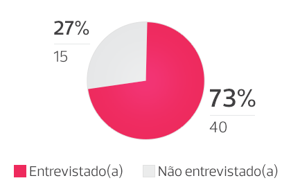
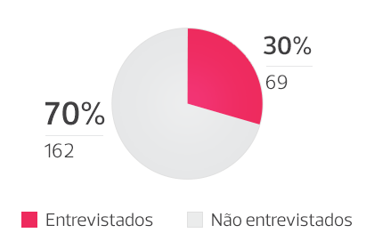

Relatório - Interação one-to-one
Metodologia
Objetivos
A Interação One-to-One foi realizada com vistas a:
- Garantir que os professores do Insper compreendam os Critérios de Excelência em Ensino no Insper, para execução em sua prática docente;
- Explorar a proposta de valor das iniciativas de desenvolvimento docente, sobretudo o processo de avaliação institucional anual;
- Identificar oportunidades de melhoria no processo de ensino e aprendizagem praticado no Insper;
- Estreitar os laços de confiança e empatia entre a equipe de Desenvolvimento de Ensino e Aprendizagem (DEA) e o corpo docente do Insper.
Design Thinking
Design Thinking é (...)
Foi com esse mindset que a equipe DEA desenhou a experiência que envolveria os professores na Interação One-to-One foi repensada. Assim, foram construídas ações diferentes das usuais até então:
- Reconhecimento do professor como pessoa, de modo individualizado;
- Convite com linguagem e identidade mais informal, incluindo possibilidade de escolha da data e horário de participação por meio de formulário online;
- Entrega de folder explicativo;
- Entrega de chocolate ao final da experiência, como forma de agradecimento;
Além disso, em diversos momentos foram construídos protótipos validados diretamente com os envolvidos, os quais geravam feedbacks e aperfeiçoamentos ao longo de todo o desenrolar do projeto, conforme apresenta-se a seguir.
Professores Entrevistados
Foram convidados para a Interação One-to-One 286 professores alocados em 2016 nos programas de Graduação, Pós-Graduação Lato Sensu, Pós-Graduação Stricto Senso e Educação Executiva, tanto professores de dedicação exclusiva, quanto professores de tempo parcial.
A participação era voluntária e, em geral, os professores poderiam escolher horários no período do final da manhã (entre 10h e 12h) ou no final da tarde (entre 17h e 19h).
Dentre os convidados, aceitaram o convite e foram entrevistados 109 professores, amostra que totaliza 38% do universo estudado. As entrevistas foram realizadas entre maio e outubro de 2016.
Em relação à dedicação do professor (exclusiva ou de tempo parcial), houve adesão de 73% dos professores de dedicação exclusiva e 30% dos professores de tempo parcial.
Distribuição de professores de dedicação exclusiva
Distribuição de professores de tempo parcial
Dentre os 109 entrevistados, 63 lecionam na Graduação, 63 na Pós-Graduação Lato Sensu, 23 em Stricto Senso e 30 na Educação Executiva, conforme representação a seguir:
- Graduações em Admistração, Economia e Engenharias.
- Pós-Graduação Lato Sensu: Certificates, MBAs, APFs, LL.M, LL.C.s
- Pós-Graduação Stricto Sensu: Mestrados Profissionais em Administração e Economia e Doutorado em Economia.
- Educação Executiva: Cursos livres e programas customizados.
Realização das Entrevistas Dialogadas
As entrevistas dialogadas visavam promover um ambiente tranquilo e personalizado de acordo com as necessidades e individualidades de cada docente.
Na grande maioria dos encontros participaram dois membros do DEA, um dedicado inteiramente na interação com o(a) professor(a), outro focado no registro da conversa em forma de transcrição.
Em cada início de entrevista o DEA explicou o propósito e a dinâmica da interação, destacando a finalidade de aperfeiçoamento dos processos e a questão da confidencialidade. Em seguida, apresentou a nova estrutura do DEA e os membros presentes, incluindo questões mais pessoais para construção de empatia.
Depois desse quebra-gelo, passava-se ao roteiro norteador com oito perguntas básicas, a partir das quais o diálogo se desenrolava:
Apresentação do professor
- Descreva sua jornada como professor(a) até aqui.
- Qual foi a experiência mais marcante que você já teve em sala de aula?
Critérios de Excelência em Ensino
- O que você entende por processo de ensino e aprendizagem?
- Conhece os Critérios de Excelência em Ensino no Insper? O que acha deles?
Autoavaliação docente
- Quanto ao processo de avaliação de professores, o que achou da autoavaliação docente?
Evidências do aprendizado
- Durante as suas aulas, como você verifica a aprendizagem do aluno? Você experimenta coletar evidências do aprendizado de seus alunos? O que é evidência do aprendizado para você?
Ações de aprimoramento contínuo do corpo docente e relacionamento com o DEA
- Com relação às ações de aprimoramento contínuo do corpo docente, o que você precisa de nós? Há algo que podemos fazer por você?
- Se pudesse alterar duas responsabilidades da nossa área dentro dos próximos seis meses, o que criaria mais valor e benefícios para você, como professor(a)?
Registro das Entrevistas Dialogadas
Todas as entrevistas realizadas foram registradas via transcrição, ocultando-se quaisquer informações que pudessem identificar os professores. Apenas os membros do DEA diretamente envolvidos na entrevista têm acesso aos materiais originais, os quais foram salvos em servidor externo ao Insper, via Google Drive.
Nas primeiras entrevistas realizadas, em caráter de protótipo, os registros foram enviados aos professores para que validassem os registros. Após constatar-se a fidelidade e confiabilidade dos registros realizados, avaliou-se que não era necessário realizar esse processo de validação com todos os professores, o qual foi repetido apenas em casos específicos.
Análise dos Resultados
Conforme proposta inicial, os dados foram analisados pela equipe DEA, principalmente de forma qualitativa, por meio do Template Analysis. Segundo essa metodologia, “xxx”.
O template construído inicialmente foi aperfeiçoado ao longo das entrevistas. De modo geral, foram incluídos itens relativos ao Feedback da Avaliação Institucional Docente, às coordenações acadêmicas e à instituição de modo geral, itens esses não previstos inicialmente.
Quanto à apresentação dos resultados, foram realizados protótipos de apresentação junto à diretoria executiva do Insper, por meio dos quais se constatou a necessidade de incluir também algumas análises de cunho mais quantitativo.
Equipe Envolvida
A iniciativa foi conduzida pelo DEA por meio da frente de Apoio à Gestão e Desenvolvimento Docente, liderada por Juliana Machado Massi, coordenadora de Ensino e Aprendizagem, e apoiada diretamente por Vinícius Cassio Barqueiro, analista Sr. de Design Instrucional.
Juliana conduziu a maioria das entrevistas, enquanto Vinícius ficou responsável pela maioria dos registros de transcrição e controle das etapas do projeto. Ambos desenharam toda a experiência, incluindo roteiros de entrevista e metodologias de análise.
Também houve momentos em que Vinícius conduziu as entrevistas, com Gabriel Mendes Santana, assistente de Ensino e Aprendizagem, realizando o registro. Gabriel, aliás, coordenou os convites, reservas de sala, envio de agendamentos, compra de lembranças e impressão dos folders.
Apenas os três (Juliana, Vinícius e Gabriel) tiveram acesso aos registros originais. Nenhuma outra pessoa teve acesso a qualquer identificação dos dados, nem mesmo diretores.
Todos os materiais visuais usados no desenvolvimento das entrevistas foram cocriados pela equipe envolvida e produzidos por Rodrigo Florenciano da Silva, webdesigner do DEA, que garantiu todo o alinhamento entre a estratégia e a identidade visual utilizada.
A análise qualitativa das entrevistas foi realizada por Juliana, com validações de Débora Mallet, coordenadora de Ensino e Aprendizagem, e Irineu Gianesi, Diretor de Assuntos Acadêmicos.
A apresentação dos resultados, por meio deste relatório, foi cocriada por Juliana, Vinícius e Rodrigo, o qual também foi responsável pela arte final.